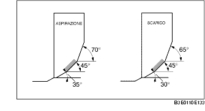

ISPEZIONE/RIPARAZIONE SEDE VALVOLA
B3E011010102201
1. Misurare l'ampiezza della superficie di contatto della sede.
-
• Se non è conforme a quanto specificato, rifare la sede della valvola usando una fresa a 45° e/o rifare la superficie della valvola.
-
Ampiezza standard:
-
1,2-1,6 mm (0,048-0,062 in)
2. Verificare che la valvola si assesti centralmente nella sede.
-
(1) Se la valvola risulta troppo scentrata verso l'esterno della sede, rettificare la sede della valvola con una fresa a 70° (ASPIRAZIONE) o 65° (SCARICO) e una fresa a 45°.
-
(2) Se la valvola risulta troppo scentrata verso l'interno della sede, rettificare la sede della valvola con una fresa a 30° (ASPIRAZIONE) o 0° (SCARICO) e una fresa a 45°.

3. Controllare lo sprofondamento della sede valvola. Misurare la sporgenza (dimensione L) dello stelo valvola.
-
• Se non è conforme a quanto specificato, sostituire la testata.
-
Dimensione L standard:
-
ASPIRAZIONE: 40,64-42,24 mm (1,600-1,662 in)
-
SCARICO: 40,50-42,10 mm (1,595-1,657 in)